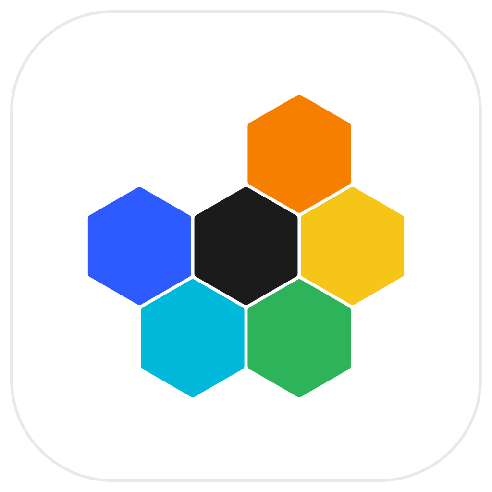

A new color code with room for more data, no corner squares, and everything on your device. Free and offline. Signing and encryption are in development.
Install the app Scan a code
In 8-color mode. A standard QR holds up to 2,953 bytes, in black and white. Prism black and white holds 1,523, so the gain comes from color.
No account, no upload, no tracking. The reader works with no signal.
A distinctive shape you can recognize as yours. Damage repair and a checksum catch a bad read: it is designed to give a result or "try again", not a wrong one (0 wrong in our tests so far).
QR phishing is a growing problem. A signed Prism Code will show who issued it before you open anything.
Encrypt the content so only people with the key can read it.
Split a larger file across several codes and scan them in turn. Also planned: expiring codes, tickets, business cards and Wi-Fi.